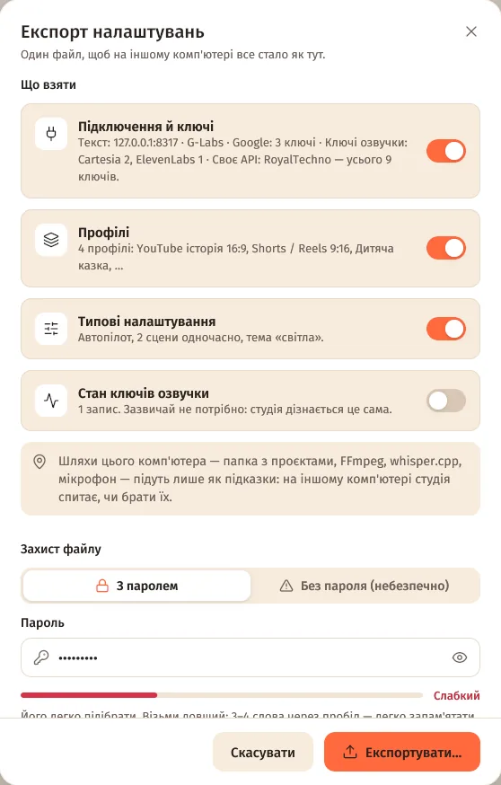
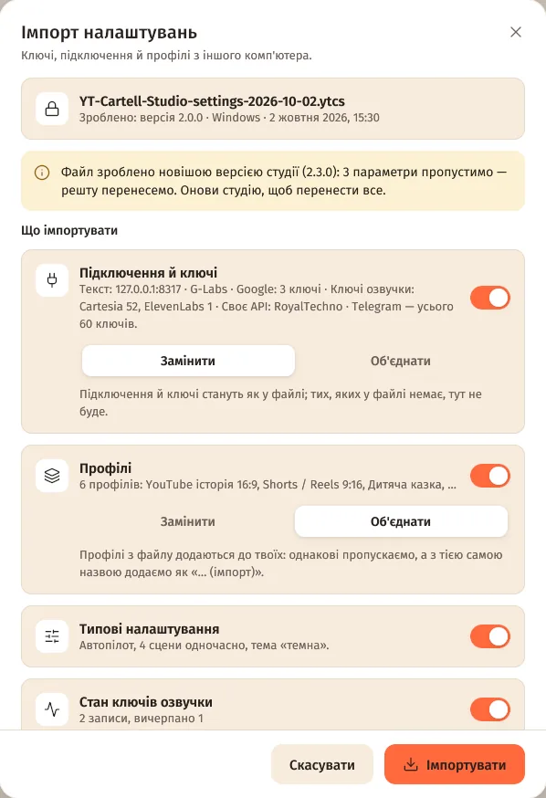
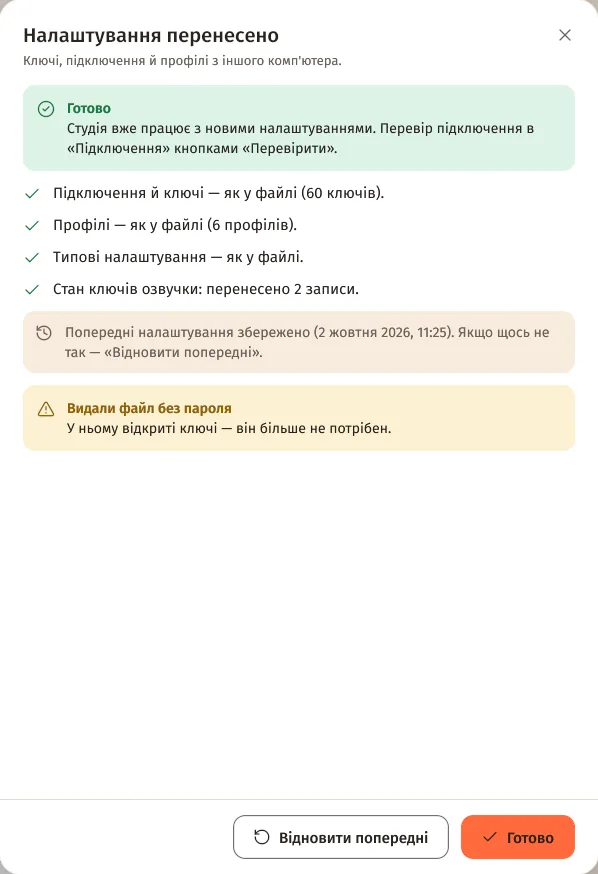

Зміст сторінки
Експорт
- Налаштування → «Дані» → «Перенести налаштування на інший комп'ютер» → «Експортувати налаштування…».
- «Що взяти»: «Підключення й ключі», «Профілі», «Типові налаштування» (увімкнено), «Стан ключів озвучки» (зазвичай не потрібно).
- «Захист файлу»: «З паролем» — щонайменше 8 символів, двічі. «Без пароля (небезпечно)» — тоді всі ключі у файлі відкритим текстом.
- «Експортувати…» → файл
YT-Cartell-Studio-settings-РРРР-ММ-ДД.ytcs(типово в «Документах»).

Імпорт
- На іншому комп'ютері: Налаштування → «Дані» → «Імпортувати…» → вибери файл
.ytcs. - Введи пароль → «Відкрити».
- «Що імпортувати» — для кожного розділу «Замінити» або «Об'єднати».
- «Шляхи з того комп'ютера» (папка з проєктами, FFmpeg, whisper.cpp, мікрофон) — беруться, лише якщо увімкнеш.
- «Імпортувати» → «Налаштування перенесено». Перевір підключення кнопками «Перевірити».


Замінити чи об'єднати
| «Замінити» | «Об'єднати» | |
|---|---|---|
| Підключення й ключі | Стане як у файлі. | Твої підключення лишаються; ключі з файлу додаються без повторів; ще не налаштовані сервіси беруться з файлу. |
| Профілі | Стане як у файлі. | Однакові пропускаються; профіль із тією самою назвою додається як «… (імпорт)». |
| Стан ключів озвучки | Стане як у файлі. | Береться лише для ключів, про які тут ще нічого не відомо. |
Пароль і безпека
- Файл шифрується AES-256-GCM, ключ виводиться з пароля (PBKDF2-SHA256, 600 000 ітерацій). Забутий пароль не відновити.
- Без пароля файл прочитає будь-хто: не пересилай його в чати, не клади в спільні папки, а після перенесення — видали.
- Вхід через Telegram у файл не потрапляє — на новому комп'ютері увійди знову.
Резервна копія й відновлення
- Перед кожним імпортом студія зберігає копію поточних налаштувань — кнопка «Відновити попередні» поверне їх (зберігаються 5 останніх копій).
- Перед переустановкою Windows чи заміною комп'ютера зроби експорт — це і є резервна копія налаштувань.
- Файл від новішої версії студії: відоме перенесеться, решту студія пропустить і попросить оновитися.
Після перенесення
- Проєкти не переносяться — скопіюй папку
Документи\YT Cartell Studio\projectsі, якщо треба, вкажи її в «Дані» → «Змінити…». - Telegram-бот на новому комп'ютері вимкнений, доки не ввімкнеш: один бот не може слухати два комп'ютери одночасно.
- FFmpeg і whisper.cpp на новому комп'ютері встанови кнопками «Встановити автоматично» / «Встановити».
Питання
Можна перенести налаштування з Windows на Mac?
Так, файл .ytcs однаковий для обох. Шляхи з іншої системи студія запропонує лише як підказки.
Що, як імпорт усе зламав?
«Відновити попередні» — у вікні результату й у «Дані». Студія повертає налаштування, що були перед імпортом.